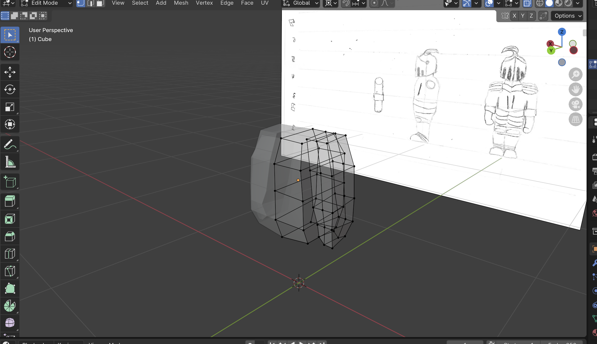
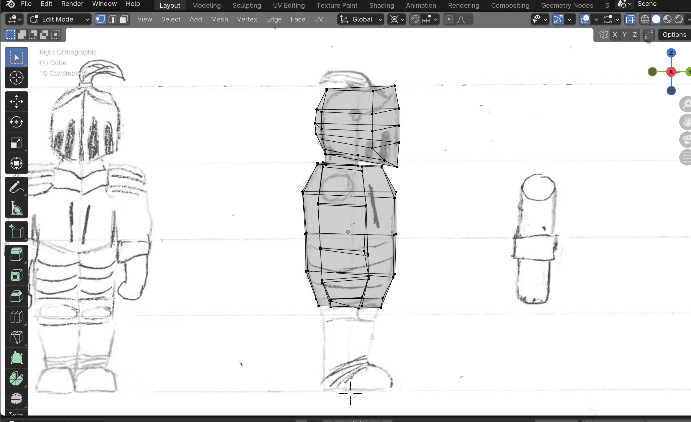
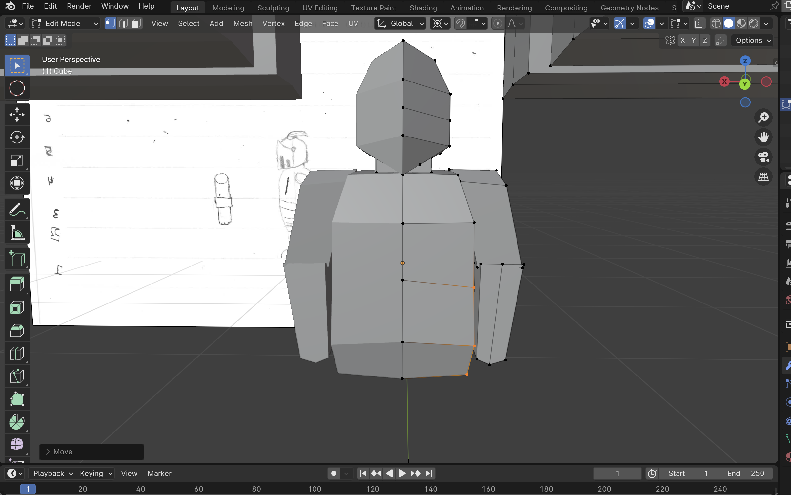
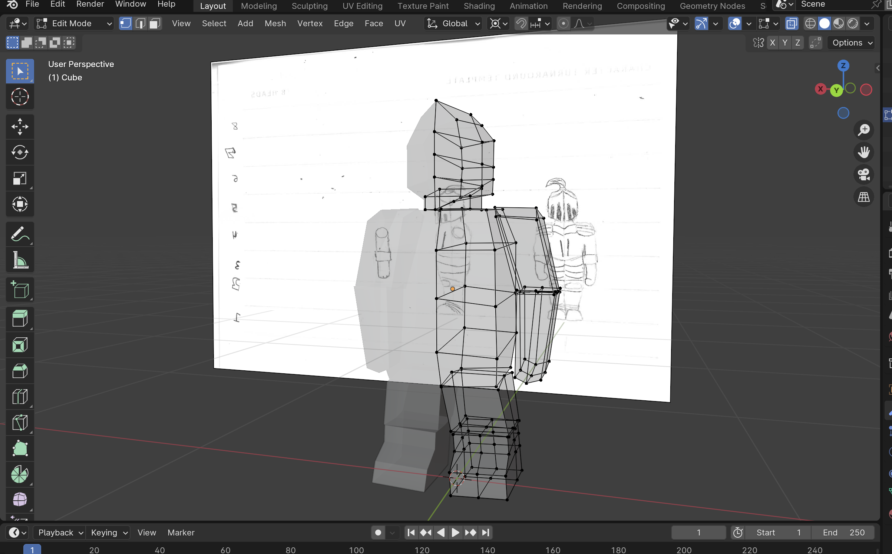
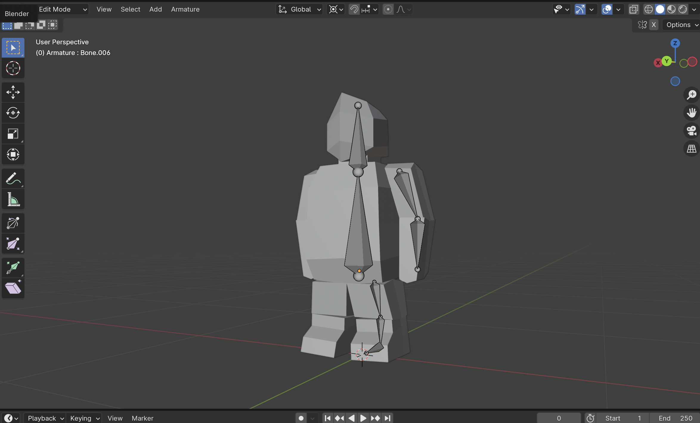
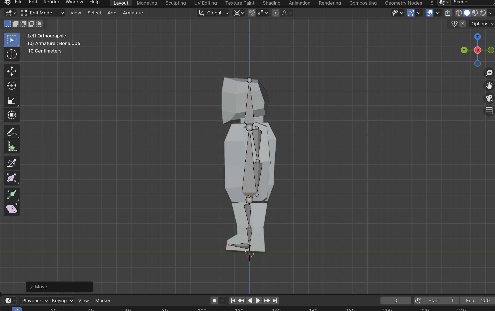

Turnaround
Development
To start I started to lightly sketch my character, I knew I didn't want to do a really big realistic character so I decided on a cartoony knight character, I wanted it to almost look like a chess piece or a character from a tv show. When I made the character I didn't know how much detail I needed to add so I probably should have simplified it as to let me transfer it better into blender. I quite liked the front on view so I moved onto the side angle which was slightly tougher but I enjoyed making it.
Feedback
Person 1
Remove some of the detail, to much detail will be hard to add to your character in blender so its best that you remove it now.
Improvements
After the feedback I decided to remove some of the ecsesive details that I added to the character and tried to rework some of the characters curves as I felt that the character could be improved on more. Overall I like the design and the personality the character has the only thing is i'm not sure if im going to be able to do the knights plume but we'll see when I start making the character.
Arms
Development
   To make the arms I added a cube onto the side of the characters torso to make an arm, refrencing the turnaround images so that it would have the same shape as the turnaround. After getting the general shape of an arm I tried to shape hands and added more points in the arm to give it more shape and connected it to the arms better.
Testing
When viewing the model everything looked how I intended it to look the only thing was that the top of the arm clipped into the shoulder a little bit and a few other minor things. But overall it looked how I wanted it to, and worked as intended as well as looking decent.
Feedback
Person 1
Maybe split the arm into two parts so that it functions better and when you get to the animation stage it will be easier to rig and move around compared to the one solid arm you have.
Improvements
After the feedback from the person I redid most of the arm, making it into two sections, an upper arm and a lower arm, instead of the single arm like I had before as that would have moved like one object.
 Armature
Development
After modeling my character I started the rigging process, first lots of settings and little things had to be done before I could start adding the bones and giving them all the correct attunments.
Testing
After testing all the bones moved as intended and they fit well into my character from all angles, overall it worked out well and their are no big visual problems.
Feedback
Person 1
Overall looks good, the main thing to worry out is it function just make sure everything is working as intended before starting the animations as if it isn't it could lead to future problems.
Improvements
After the feedback I made sure to do extra testing to make sure everything is working well and other than a few minor problems/things which I had to tweak, after those everthing worked as I wanted to and so I Started working on some beggining animations.